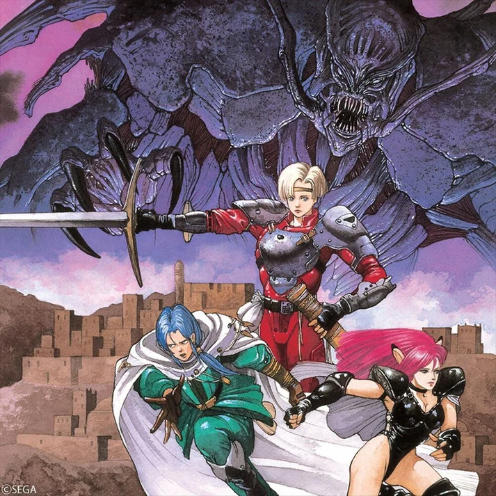

NOXIUM ELYSIUM > root:psiv/music.html
The original soundtrack of Phantasy Star IV is a masterful composition that stands as one of the defining elements of the game, enhancing its narrative and world-building with its rich, evocative soundscapes. Created by composers Izuho Takeuchi and Masaki Nakagaki, the score blends a wide range of musical genres, from dynamic synth-rock to ethereal, ambient tracks that immerse players in the sci-fi fantasy universe of Algo. The soundtrack's intense battle themes are driven by powerful bass lines and energetic rhythms, perfectly matching the urgency and high stakes of the game's encounters, while the more serene and haunting melodies underscore the vast landscapes and ancient ruins that players explore.
Each piece in the soundtrack serves a distinct purpose, transforming the atmosphere to reflect the mood of each scene and the emotional journey of the characters. Tracks like "Laughter" and "The End of the Millennium" carry a sense of nostalgia and melancholy, connecting players to the series' deep lore and the legacy of its predecessors. Meanwhile, the stirring overworld themes convey a feeling of vast adventure, urging players forward on their quest. The use of layered synthesizers and memorable melodies not only captures the spirit of the game's diverse settings but also highlights key moments in the storyline, from tragic revelations to moments of hope and triumph.
The Phantasy Star IV soundtrack's ability to blend narrative depth with musical sophistication has helped it maintain a special place in the hearts of fans and remains a standout example of video game music from the 16-bit era. Its compositions are not just background elements; they are integral to the storytelling, shaping the emotional landscape of the player's journey and adding to the game's timeless appeal. Whether experienced during the most intense battles or in the quiet moments of reflection, the music of Phantasy Star IV continues to resonate with players, cementing its place as a beloved classic in the realm of retro gaming soundtracks.
THE END OF THE MILLENNIUM |
MOTAVIA TOWN |
FIELD MOTAVIA |
SUSPICION |
IN THE CAVE |
MEET THEM HEAD-ON! |
WINNERS! |
DEFEAT AT A BLOW! |
INN |
NOW ON SALE |
MOTAVIA VILLAGE |
TERRIBLE SIGHT |
RUNE |
TONOE DE PON |
JIJY NO RAG |
A HAPPY SETTLEMENT |
PS1 DUNGEON ARRANGE 1 |
RIKA |
BEHIND THE CIRCUIT |
PAO-PAO! |
ORGANIC BEAT |
THE BLACK BLOOD |
LAUGHTER |
RED ALERT |
PAIN |
MACHINE CENTER |
LAND MASTER AXV-25 |
CYBERNETIC CARNIVAL |
PS1 DUNGEON ARRANGE 2 |
HER LAST BREATH |
TAKE OFF! LANDALE |
DEZOLIS FIELD 1 |
DEZOLIS TOWN 1 |
DEZOLIS TOWN 2 |
THE KING OF TERRORS |
DEZOLIS DE DON |
REQUIEM FOR LUTZ |
GUMBIOUS TEMPLE |
DEZOLIS FIELD 2 |
TOWER |
THE AGE OF FABLES |
RYKROS FIELD |
EDGE OF DARKNESS |
ABYSS |
OOZE |
THE PROMISING FUTURE 1 |
THE PROMISING FUTURE 2 |
STAFF ROLL |